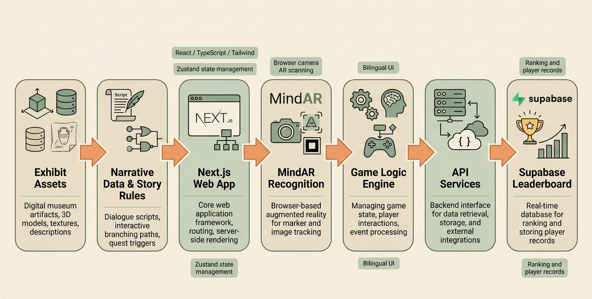
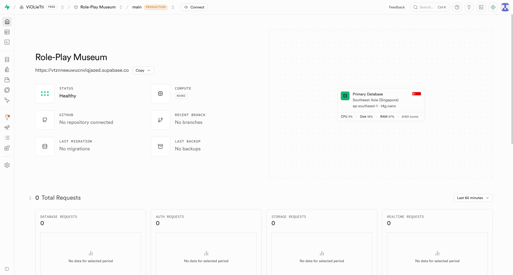
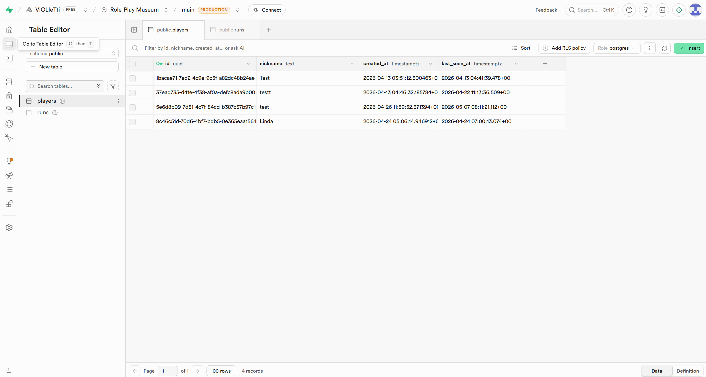
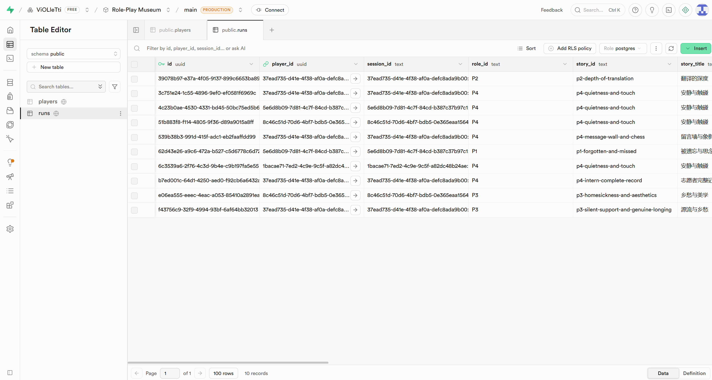

Museum Tales was implemented as a web-based interactive museum storytelling prototype with Web AR features. The system was designed to connect physical museum exhibits, digital story content, user interactions, and player records into one continuous experience. Instead of building a static information website, we aimed to create a playable prototype where users could choose a role, explore exhibits, collect clues, talk to NPCs, reconstruct the story, and receive an ending and ranking result.

Fig.5 Full system architecture and component flow.
The overall system architecture includes several connected layers: exhibit assets, narrative data and story rules, the Next.js web application, MindAR recognition, the game logic engine, API services, and the Supabase leaderboard database.
The first layer is the Exhibit Assets. This includes digital museum materials such as exhibit images, descriptions, possible 3D assets, textures, and cultural postcard content. These assets provide the visual and educational foundation of the experience. They allow the digital system to remain connected to real museum objects rather than becoming a separate fictional game.
The second layer is Narrative Data and Story Rules. This part contains the dialogue scripts, clue keywords, role-based paths, quest triggers, and ending conditions. For example, different scanned exhibits can unlock different clues, and these clues influence what the user can understand during NPC conversations or story reconstruction. This layer is important because the project is not only about visual interaction, but also about maintaining a coherent story logic.
The core interface is built as a Next.js Web App, using React, TypeScript, and Tailwind CSS. Next.js was used to structure the main pages and routing, while React components helped us divide the interface into reusable parts, such as role cards, clue cards, NPC cards, navigation bars, and result panels. Tailwind CSS supported fast UI styling and helped keep the visual system consistent across pages. Zustand was used for state management, allowing the system to store and update the user’s selected role, collected clues, current progress, and interaction status during the experience.
The MindAR Recognition layer supports browser-based AR scanning. In the prototype, this function connects real or simulated exhibit/postcard scanning with digital clue unlocking. When a user scans a valid marker or exhibit image, the system can trigger the corresponding story fragment, keyword, or clue. This makes the experience closer to a real museum interaction, where users discover digital content through physical objects.
The Game Logic Engine manages the internal interaction rules. It controls how role selection affects later tasks, how scanning unlocks clues, how NPC conversations respond to collected information, and when users can enter the story reconstruction stage. It also manages score, level, ending conditions, and basic event processing. This logic is what turns the system from a set of separate pages into a connected story experience.
The API Services layer works as the interface between the front-end system and data storage. It supports data retrieval, storage, and communication between the web app and external services. In this project, it is mainly connected to player records, ranking data, and result synchronization.
Finally, Supabase is used as the leaderboard and player record database. It stores player-related information such as nickname, selected role, ending result, score, level, and recent run data. This allows the Profile and Ranking pages to show user achievements and encourages replay through comparison and competition.
Overall, the system follows this interaction flow:
User ↓ Web UI ↓ Role Selection ↓ Mission Hub ↓ Scan Exhibits / Postcards ↓ Clue Collection ↓ NPC Dialogue ↓ Story Reconstruction ↓ Ending / Score / Level ↓ Profile / Ranking
This architecture helped us connect the museum content, story structure, AR interaction, and player progress into one playable prototype. Although the system is still a prototype rather than a fully deployed museum product, it demonstrates how a Web AR storytelling experience can technically support role-based exploration and interactive museum learning.
This section presents how the project handles gameplay data across the frontend interface, local game state, API routes, and the cloud database. The data handling structure supports a complete game loop, from role selection and exhibit scanning to story reconstruction, ending generation, and leaderboard display.
1. Local State Management: Zustand
The frontend gameplay state is managed with Zustand. It stores the current player role, scanned exhibits, collected clues, dialogue history, unlocked endings, and submitted reconstruction results. This allows the app to track the player's progress across different pages without requiring a user login.
Key gameplay states include:
selectedRole scannedExhibits collectedClueIds eventHistory viewedEndingStoryIds submittedStories
Key state actions include:
selectRole() scanExhibit() submitStory() resetRun()
Through this local state structure, the system can remember what the player has already scanned, which clues have been collected, and whether the player has reached the conditions for story reconstruction.
2. Persistent Data Storage: Supabase
Supabase is used to store persistent leaderboard and player record data. Unlike Zustand, which only manages the current gameplay session, Supabase stores data that needs to remain available after the game ends.

Supabase project and database evidence.
The database mainly includes two tables:
Players Table

Supabase players table evidence.
The players table stores anonymous player information, including nickname and creation time. This allows users to submit their names for leaderboard ranking without requiring a formal account system.
Runs Table

Supabase runs table evidence.
The runs table stores each completed game run. Each record includes the player ID, selected role, story ending, score, grade, duration, collected clue IDs, and scanned exhibit IDs. This table is used to generate leaderboard results and record each player's completed story experience.
Before placing these screenshots in the portfolio, sensitive information should be hidden, including the Supabase project ID, browser address bar, API keys, service role key, and full UUID values.
3. API Flow
Next.js API routes are used to connect the frontend pages with Supabase. The Ending page submits player and run data, while the Profile page retrieves leaderboard results from the database.
The data flow is structured as follows:
Ending Page | | submit nickname v /api/player/init | v Supabase players table
Ending Page | | submit completed run v /api/run/submit | v Supabase runs table
Profile Page | | fetch leaderboard v /api/leaderboard | v Supabase runs + players | v Leaderboard UI
This API structure separates the user interface from database operations. It also makes the system more maintainable, because player creation, run submission, and leaderboard retrieval are handled through independent backend routes.
Summary
The project uses a layered data handling structure. Zustand manages temporary gameplay state on the frontend, browser storage keeps short-term player and run information across page navigation, Supabase stores persistent player and leaderboard records, and Next.js API routes connect the interface with the database. Together, these components support a complete and functional gameplay data flow from scanning to ranking.